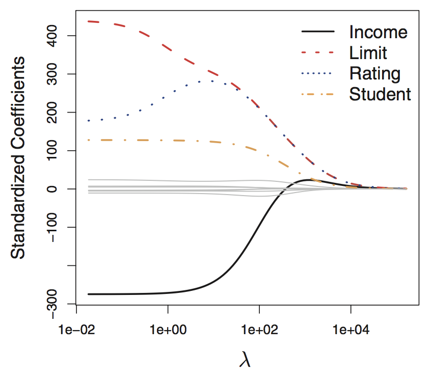
Supervised learning: regularization
Background
Shortcomings of linear regression
Predictability
Recall that we can decompose estimation (prediction) error into squared bias and variance
Linear regression: high bias, low variance
. . .
Variable selection
With a large number of predictors, it can be helpful to identify a subset of relevant features and eliminate uninformative ones
Linear regression “freely” assigns a coefficient to each predictor variable
Can we have a model fitting procedure that make only a subset of the coefficients large, and others small (or even better, zero)?
The big picture
Regularized/shrinkage/penalized regression
- Involves fitting a model containing all \(p\) predictors
. . .
- However, the estimated coefficients are shrunken towards zero relative to the least squares estimates of vanilla linear regression
. . .
- This “shrinkage” (also known as regularization) has the effect of reducing variance
. . .
- Depending on what type of regularization is performed, some coefficient estimates can be exactly zero
. . .
- Thus, regularization methods (e.g. LASSO) can perform variable selection
Recap: linear regression
- Linear regression (least squares) estimates coefficients by minimizing
\[\text{RSS} = \sum_{i=1}^n \big(Y_i - \beta_0 - \sum_{j=1}^p \beta_j X_{ij}\big)^2\]
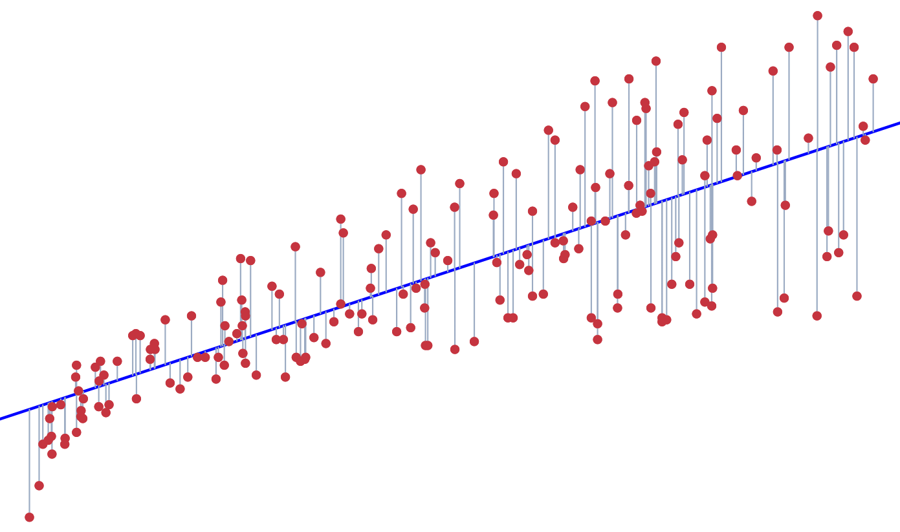
Ridge regression
Linear regression vs ridge regression
- Linear regression (least squares) estimates coefficients by minimizing
\[\text{RSS} = \sum_{i=1}^n \big(Y_i - \beta_0 - \sum_{j=1}^p \beta_j X_{ij}\big)^2\]
. . .
- Ridge regression introduces a shrinkage penalty term and minimizes
\[\sum_{i=1}^n \big(Y_i - \beta_0 - \sum_{j=1}^p \beta_j X_{ij}\big)^2 + \lambda \sum_{j=1}^p \beta_j^2 = \text{RSS} + \lambda \sum_{j=1}^p \beta_j^2\]
. . .
Ridge regression uses a (squared) \(\ell_2\) penalty (hence ridge is also known as \(\ell_2\) regularization)
- The \(\ell_2\) norm of a coefficient vector \(\beta\) is given by \(\displaystyle \Vert \beta \Vert_2 = \sqrt{\sum_{j=1}^p \vert \beta_j \vert ^2}\)
Ridge regression: more details
- Recall that ridge regression minimizes
\[\sum_{i=1}^n \big(Y_i - \beta_0 - \sum_{j=1}^p \beta_j X_{ij}\big)^2 + \lambda \sum_{j=1}^p \beta_j^2 = \text{RSS} + \lambda \sum_{j=1}^p \beta_j^2\]
. . .
- Here, \(\lambda \ge 0\) is a tuning parameter, which controls the strength of the penalty term
. . .
- Use cross-validation to tune \(\lambda\) (for a fixed value of \(\lambda\), ridge regression fits only a single model)
. . .
As \(\lambda\) increases, flexibility of models decreases (bias increases, variance decreases)
When \(\lambda = 0\), it’s just linear regression
When \(\lambda \rightarrow \infty\), the coefficient estimates approach 0
For \(\lambda\) in between, we are balancing two ideas: fitting a linear model and shrinking the coefficients
Ridge regression: textbook example
Notice how the magnitude of the coefficients for the 4 highlighted variables trend as \(\lambda \rightarrow \infty\)
The coefficients shrink towards zero, but never actually reach it
Lasso & sparsity
Moving from ridge to lasso
- Ridge never sets coefficients to exactly zero (i.e., always keeps all variables)
. . .
- Therefore ridge regression cannot perform variable selection
. . .
- But we may believe there is a sparse solution (i.e., a model involving only a subset of the variables)
. . .
- Entering the lasso (least absolute shrinkage and selection operator)
. . .
- Compared to ridge, one big advantage of lasso/sparsity: it performs variable selection in the linear model, so we can understand which relevant features the model relies on for prediction
Linear regression vs ridge vs lasso
- Linear regression (least squares) estimates coefficients by minimizing
\[\text{RSS} = \sum_{i=1}^n \big(Y_i - \beta_0 - \sum_{j=1}^p \beta_j X_{ij}\big)^2\]
. . .
- Ridge regression minimizes
\[\sum_{i=1}^n \big(Y_i - \beta_0 - \sum_{j=1}^p \beta_j X_{ij}\big)^2 + \lambda \sum_{j=1}^p \beta_j^2 = \text{RSS} + \lambda \sum_{j=1}^p \beta_j^2\]
. . .
- Lasso regression enables variable selection by minimizing
\[\sum_{i=1}^n \big(Y_i - \beta_0 - \sum_{j=1}^p \beta_j X_{ij}\big)^2 + \lambda \sum_{j=1}^p\vert \beta_j \vert = \text{RSS} + \lambda \sum_{j=1}^p \vert \beta_j \vert\]
The lasso: more details
- Recall that the lasso minimizes
\[\sum_{i=1}^n \big(Y_i - \beta_0 - \sum_{j=1}^p \beta_j X_{ij}\big)^2 + \lambda \sum_{j=1}^p\vert \beta_j \vert = \text{RSS} + \lambda \sum_{j=1}^p \vert \beta_j \vert\]
. . .
Lasso uses an \(\ell_1\) penalty (hence also known as \(\ell_1\) regularization)
- The \(\ell_1\) norm of a coefficient vector \(\beta\) is given by \(\displaystyle \Vert \beta \Vert_1 = \sum_{j=1}^p \vert \beta_j \vert\)
. . .
- The only difference between lasso and ridge is that ridge uses a (squared) \(\ell_2\) penalty \(\Vert \beta \Vert_2^2\), while lasso uses an \(\vert \ell_1 \vert\) penalty
. . .
- Importantly, although these two problems look relatively similar, their solutions behave very differently
The lasso: more details
- Recall that the lasso minimizes
\[\sum_{i=1}^n \big(Y_i - \beta_0 - \sum_{j=1}^p \beta_j X_{ij}\big)^2 + \lambda \sum_{j=1}^p\vert \beta_j \vert = \text{RSS} + \lambda \sum_{j=1}^p \vert \beta_j \vert\]
. . .
- Here, \(\lambda \ge 0\) is a tuning parameter, which controls the strength of the penalty (like ridge)
. . .
- Use cross-validation to tune \(\lambda\) (for a fixed value of \(\lambda\), lasso regression fits only a single model)
. . .
As \(\lambda\) increases, flexibility of models decreases (bias increases, variance decreases)
When \(\lambda = 0\), it’s just linear regression
When \(\lambda \rightarrow \infty\), the coefficient estimates approach 0
For \(\lambda\) in between, we are balancing two ideas: fitting a linear model and shrinking the coefficients
But the nature of the \(\ell_1\) penalty allows some coefficients to be shrunken to zero exactly
. . .
- Lasso can handle the \(p > n\) case, i.e. more variables than observations
Shrinkage methods: lasso regression
Lasso regression performs variable selection yielding sparse models (i.e. models that involve only a subset of the variables)
We get different models with different number of predictors at different values of \(\lambda\)
The coefficients shrink towards and eventually equal zero
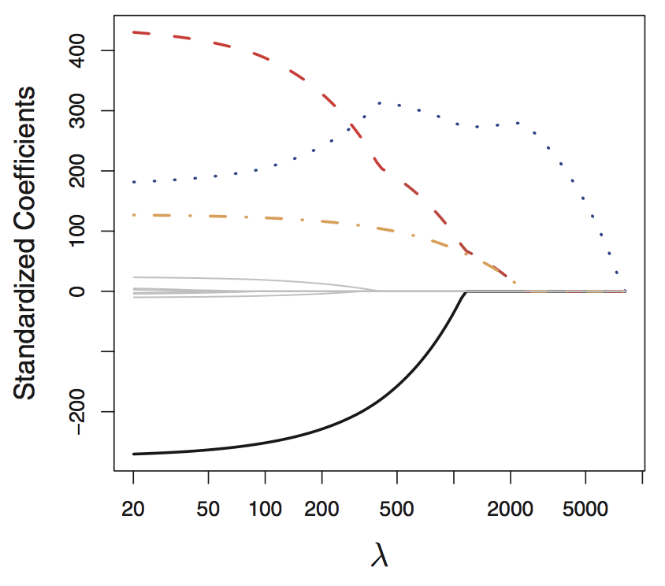
Lasso and ridge as optimization problems
Why does the lasso, unlike ridge, result in coefficient estimates that are exactly 0?
- Lasso
\[ \underset{\beta}{\text{minimize}} \sum_{i=1}^n \left(Y_i - \beta_0 - \sum_{j=1}^p\beta_j X_{ij} \right)^2 \quad \text{subject to} \quad \sum_{j=1}^p|\beta_j| \le s \]
- Ridge
\[ \underset{\beta}{\text{minimize}} \sum_{i=1}^n \left(Y_i - \beta_0 - \sum_{j=1}^p\beta_j X_{ij} \right)^2 \quad \text{subject to} \quad \sum_{j=1}^p \beta_j ^2 \le s \]
Why doesn’t ridge set coefficients equal to 0?
Ridge minimizes \(\text{RSS} + \lambda \sum_{j=1}^p \beta_j^2\)
Taking the derivative of the objective function: \(\frac{d}{d\beta_j}(\text{RSS} + \lambda \sum_{j=1}^p \beta_j^2) = \frac{d\text{RSS}}{d\beta_j} + 2\lambda \beta_j\)
Near zero: As \(\beta_j \rightarrow 0\), \(2\lambda \beta_j \rightarrow 0\), so the penalty exerts almost no force near zero.
Idea: The penalty pulls coefficients toward zero, but the pull becomes weaker as coefficients get smaller, so coefficients are rarely exactly zero.
Why does lasso set coeffcients equal to 0?
LASSO minimizes \(\text{RSS} + \lambda \sum_{j=1}^p \vert \beta_j \vert\)
Taking the derivative of the objective function: \(\frac{d}{d\beta_j}(\text{RSS} + \lambda \sum_{j=1}^p |\beta_j|) = \frac{d\text{RSS}}{d\beta_j} + \lambda \text{sign}(\beta_j)\)
The derivative (think of it as how strong the penalty pull is) stays the same no matter how close \(\beta_j\) gets to 0.
The consequence is that if \(\Big| \frac{d \text{RSS}}{d\beta_j} \Big| < \lambda\), the improvement in fit is too small to overcome the penalty, and the optimal solution is \(\beta_j = 0\).
Idea: Lasso applies a constant pull toward zero. Variables with only a weak contribution to model fit are pulled all the way to exactly zero.
Elastic net
Best of both worlds: elastic net
- Motivation: when developing models, there are often strong correlations among the features
. . .
- The lasso penalty is somewhat indifferent to the choice among a set of strong but correlated features
. . .
- The ridge penalty tends to shrink the coefficients of correlated features toward each other
. . .
The elastic net penalty is a compromise, aiming to
encourages highly correlated features to be average
encourages a sparse solution in the coefficients of these averaged features
. . .
- From the original paper’s abtract:
… the elastic net encourages a grouping effect, where strongly correlated predictors tend to be in or out of the model together.
Ridge vs lasso vs elastic net
- Ridge minimizes
\[\sum_{i=1}^n \big(Y_i - \beta_0 - \sum_{j=1}^p \beta_j X_{ij}\big)^2 + \lambda \sum_{j=1}^p \beta_j^2 = \text{RSS} + \lambda \sum_{j=1}^p \beta_j^2\]
. . .
- Lasso minimizes
\[\sum_{i=1}^n \big(Y_i - \beta_0 - \sum_{j=1}^p \beta_j X_{ij}\big)^2 + \lambda \sum_{j=1}^p\vert \beta_j \vert = \text{RSS} + \lambda \sum_{j=1}^p \vert \beta_j \vert\]
. . .
- Elastic net compromises between ridge and lasso
\[\sum_{i=1}^{n}\left(Y_{i}-\beta_{0}-\sum_{j=1}^{p} \beta_{j} X_{i j}\right)^{2}+\lambda\left(\frac{1-\alpha}{2}\|\beta\|_{2}^{2}+\alpha\|\beta\|_{1} \right)\]
Elastic net: more details
- Elastic net minimizes
\[\sum_{i=1}^{n}\left(Y_{i}-\beta_{0}-\sum_{j=1}^{p} \beta_{j} X_{i j}\right)^{2}+\lambda\left(\frac{1-\alpha}{2}\|\beta\|_{2}^{2}+\alpha\|\beta\|_{1} \right)\]
. . .
Penalty terms: \(\lambda \cdot (1 - \alpha) / 2\) (ridge) and \(\lambda \cdot \alpha\) (lasso)
\(\alpha\) controls the mixing between the two types, ranges from 0 to 1
\(\alpha = 1\) returns lasso, \(\alpha = 0\) return ridge
. . .
- \(\lambda\) and \(\alpha\) are tuning parameters; use cross-validation to tune
Scaling of predictors
In linear regression, the (least squares) coefficient estimates are scale equivariant
Multiplying \(X_j\) by a constant c simply leads to a scaling of the least squares coefficient estimates by a factor of \(1/c\)
i.e., regardless of how the \(j\)th predictor is scaled, \(X_j \hat \beta_j\) will remain the same
. . .
For ridge, lasso, and elastic net: standardize the predictors
The coefficient estimates can change substantially when multiplying a given predictor by a constant, due to the sum of squared coefficients term in the penalty
For each predictor column, subtract off the mean, and divide by the standard deviation \[\tilde{x}_{ij} = \frac{x_{ij} - \bar{x}_j}{s_{x,j}}\]
Data: NFL teams summary
Dataset summarizes NFL team performances from 1999 to 2021
library(tidyverse)
theme_set(theme_light())
nfl_teams_data <- read_csv("http://www.stat.cmu.edu/cmsac/sure/2022/materials/data/sports/regression_examples/nfl_team_season_summary.csv")
nfl_model_data <- nfl_teams_data %>%
mutate(score_diff = points_scored - points_allowed) %>%
filter(season >= 2006) %>% # Only use rows with air yards
dplyr::select(-wins, -losses, -ties, -points_scored, -points_allowed, -season, -team)Introduction to glmnet
Fit ridge, lasso, and elastic net models with glmnet. To start, create predictor matrix and response vector:
library(glmnet)
# predictors
model_x <- nfl_model_data |>
dplyr::select(-score_diff) |>
as.matrix()
# response
model_y <- nfl_model_data |>
pull(score_diff)Vanilla linear regression model
What do the initial regression coefficients look like?
Use
broomto tidy model output for plotting
init_reg_fit <- lm(score_diff ~ ., data = nfl_model_data)
library(broom)
init_reg_fit |>
tidy() |>
mutate(term = fct_reorder(term, estimate)) |>
ggplot(aes(x = estimate, y = term,
fill = estimate > 0)) +
geom_col(color = "white", show.legend = FALSE) +
scale_fill_manual(values = c("darkred", "darkblue"))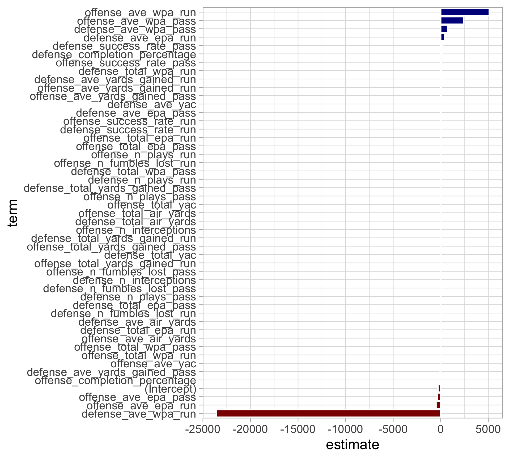
Coefficient plot (w/ uncertainty)
init_reg_fit |>
tidy(conf.int = TRUE) |>
filter(term != "(Intercept)") |>
ggplot(aes(x = estimate, y = term)) +
geom_point(size = 4) +
geom_errorbar(aes(xmin = conf.low,
xmax = conf.high,
width = 0.2)) +
geom_vline(xintercept = 0,
linetype = "dashed",
color = "red")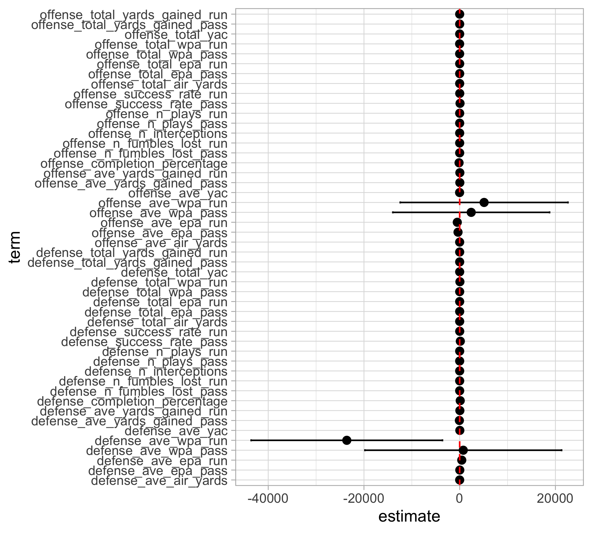
Other names: dot-and-whisker plot or forest plot or blobbogram
Ridge regression
Perform ridge regression using glmnet with alpha = 0
By default, predictors are standardized and models are fitted across a range of \(\lambda\) values
init_ridge_fit <- glmnet(model_x, model_y, alpha = 0)
plot(init_ridge_fit, xvar = "lambda")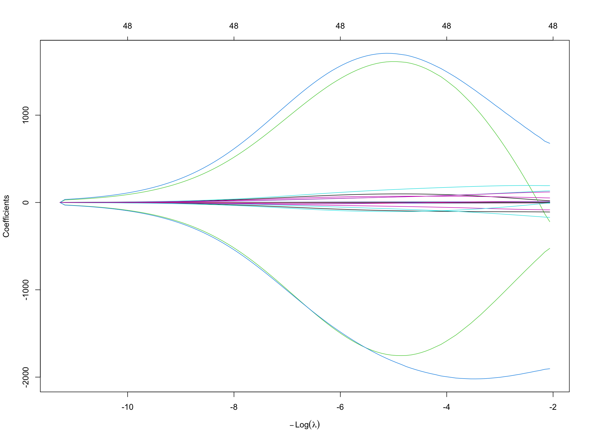
Ridge regression
Use cross-validation to select \(\lambda\) with cv.glmnet() which uses 10 folds by default
Specify ridge regression with alpha = 0
fit_ridge_cv <- cv.glmnet(model_x, model_y, alpha = 0)
plot(fit_ridge_cv)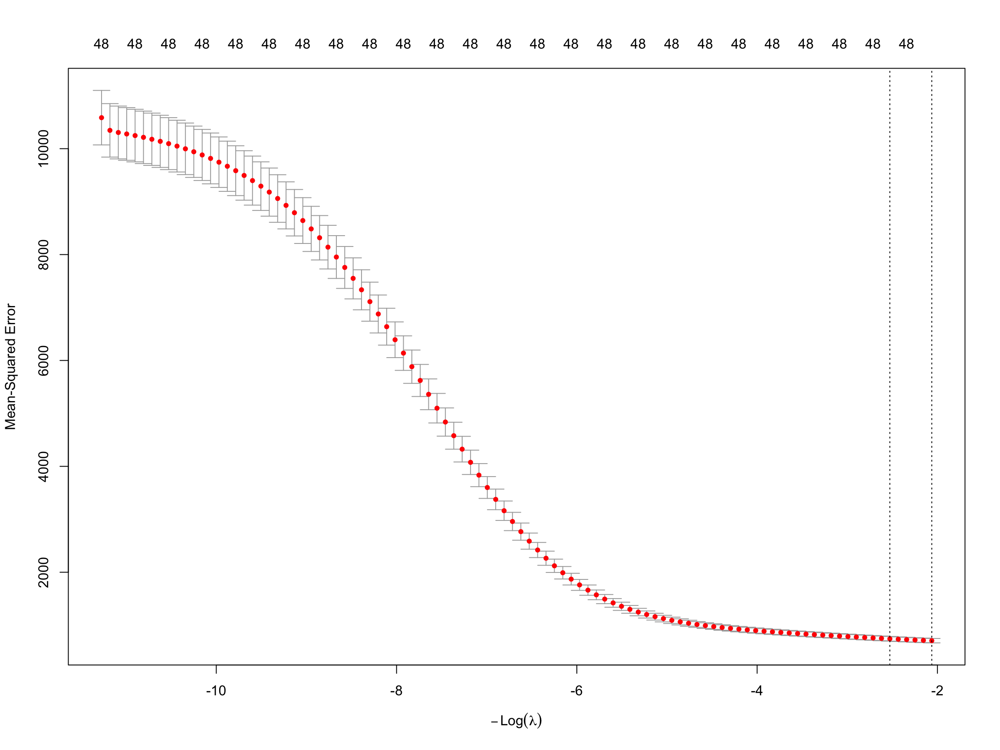
Tidy ridge regression
tidy_ridge_coef <- tidy(fit_ridge_cv$glmnet.fit)
tidy_ridge_coef |>
ggplot(aes(x = lambda, y = estimate, group = term)) +
scale_x_log10() +
geom_line(alpha = 0.75) +
geom_vline(xintercept = fit_ridge_cv$lambda.min) +
geom_vline(xintercept = fit_ridge_cv$lambda.1se,
linetype = "dashed", color = "red")+
labs(y = "Coefficients")Could easily add color with legend for variables…
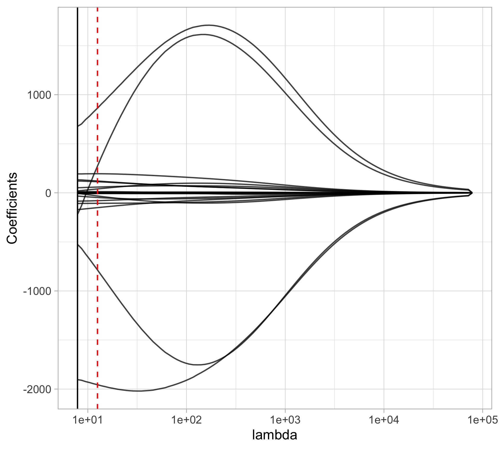
Tidy ridge regression
tidy_ridge_cv <- tidy(fit_ridge_cv)
tidy_ridge_cv |>
ggplot(aes(x = lambda, y = estimate)) +
geom_line() +
scale_x_log10() +
geom_ribbon(aes(ymin = conf.low, ymax = conf.high),
alpha = 0.2) +
geom_vline(xintercept = fit_ridge_cv$lambda.min) +
geom_vline(xintercept = fit_ridge_cv$lambda.1se,
linetype = "dashed", color = "red")+
labs(y = "MSE")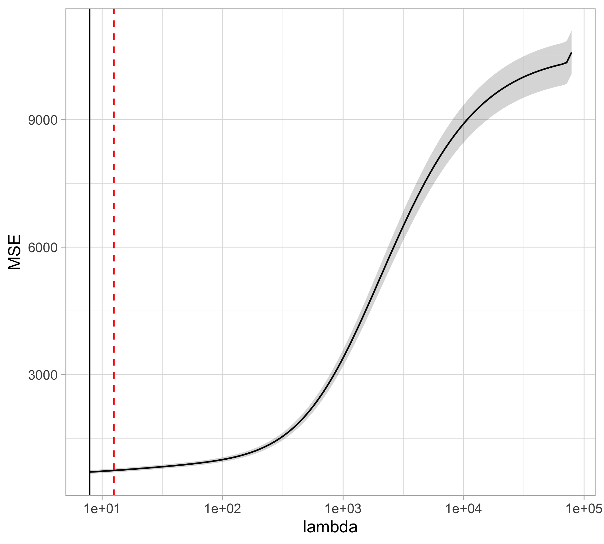
Ridge regression coefficients
Coefficients using the one-standard-error rule
(select the model with estimated test error within 1 SE of the minimum test error)
#ridge_final <- glmnet(
# model_x, model_y, alpha = 0,
# lambda = fit_ridge_cv$lambda.1se,
#)
#library(vip)
#ridge_final |>
# vip()
tidy_ridge_coef |>
filter(lambda == fit_ridge_cv$lambda.1se) |>
mutate(term = fct_reorder(term, estimate)) |>
ggplot(aes(x = estimate, y = term,
fill = estimate > 0)) +
geom_col(color = "white", show.legend = FALSE) +
scale_fill_manual(values = c("darkred", "darkblue"))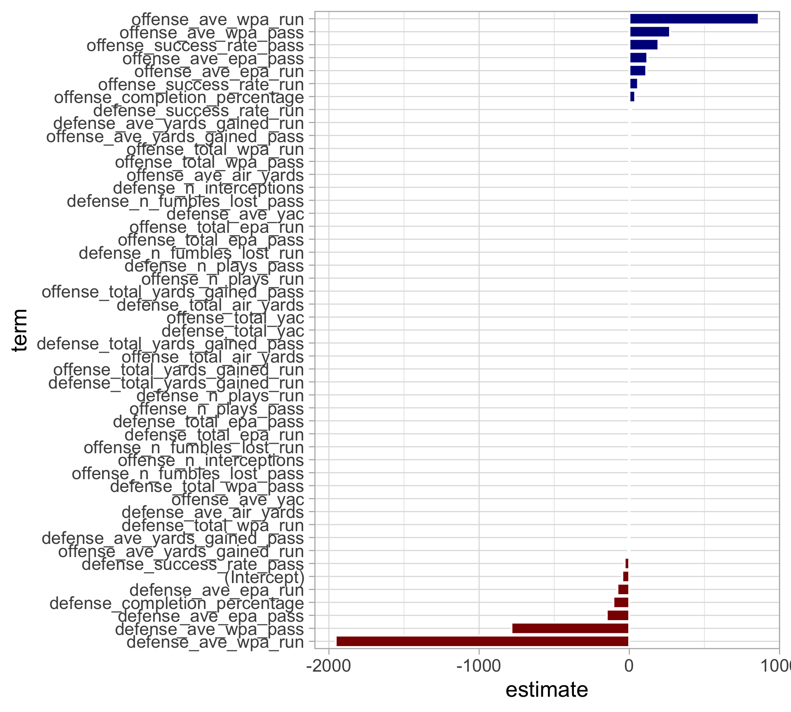
Lasso regression example
Similar syntax to ridge but specify alpha = 1:
fit_lasso_cv <- cv.glmnet(model_x, model_y,
alpha = 1)
tidy_lasso_coef <- tidy(fit_lasso_cv$glmnet.fit)
tidy_lasso_coef |>
ggplot(aes(x = lambda, y = estimate, group = term)) +
scale_x_log10() +
geom_line(alpha = 0.75) +
geom_vline(xintercept = fit_lasso_cv$lambda.min) +
geom_vline(xintercept = fit_lasso_cv$lambda.1se,
linetype = "dashed", color = "red")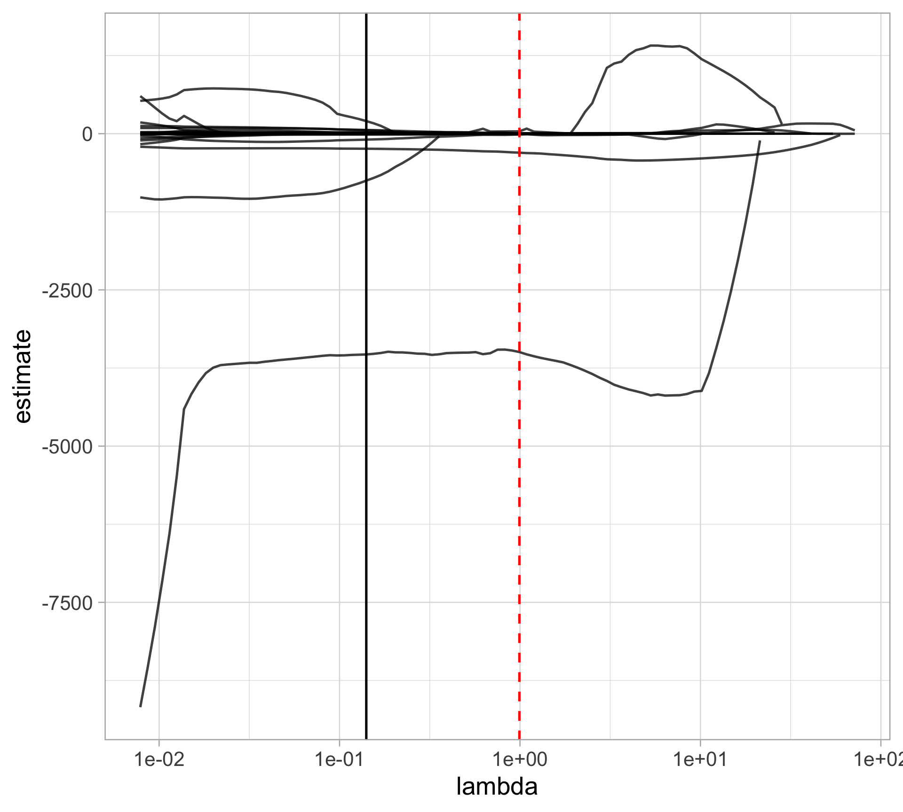
Lasso regression example
Number of non-zero predictors by \(\lambda\)
tidy_lasso_cv <- tidy(fit_lasso_cv)
tidy_lasso_cv |>
ggplot(aes(x = lambda, y = nzero)) +
geom_line() +
geom_vline(xintercept = fit_lasso_cv$lambda.min) +
geom_vline(xintercept = fit_lasso_cv$lambda.1se,
linetype = "dashed", color = "red") +
scale_x_log10()Reduction in variables using one-standard-error rule
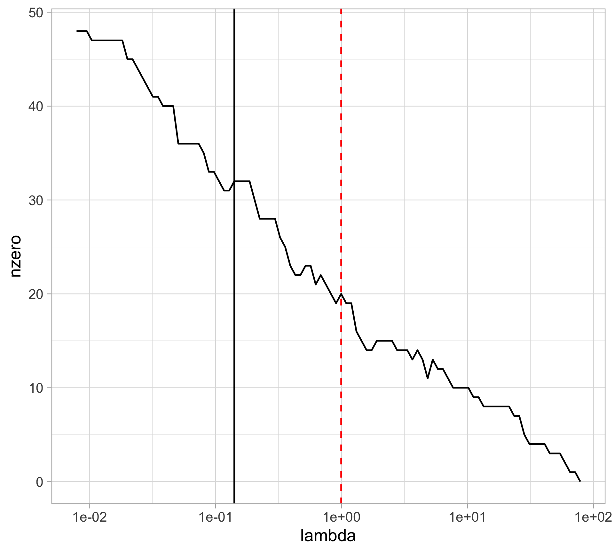
Lasso regression example
Coefficients using the one-standard-error rule
# this will only print out non-zero coefficient estimates
# tidy_lasso_coef |>
# filter(lambda == fit_lasso_cv$lambda.1se)
lasso_final <- glmnet(
model_x, model_y,
alpha = 1,
lambda = fit_lasso_cv$lambda.1se,
)
library(vip)
lasso_final |>
vi() |>
mutate(Variable = fct_reorder(Variable, Importance)) |>
ggplot(aes(x = Importance, y = Variable,
fill = Importance > 0)) +
geom_col(color = "white", show.legend = FALSE) +
scale_fill_manual(values = c("darkred", "darkblue")) +
labs(x = "estimate", y = NULL)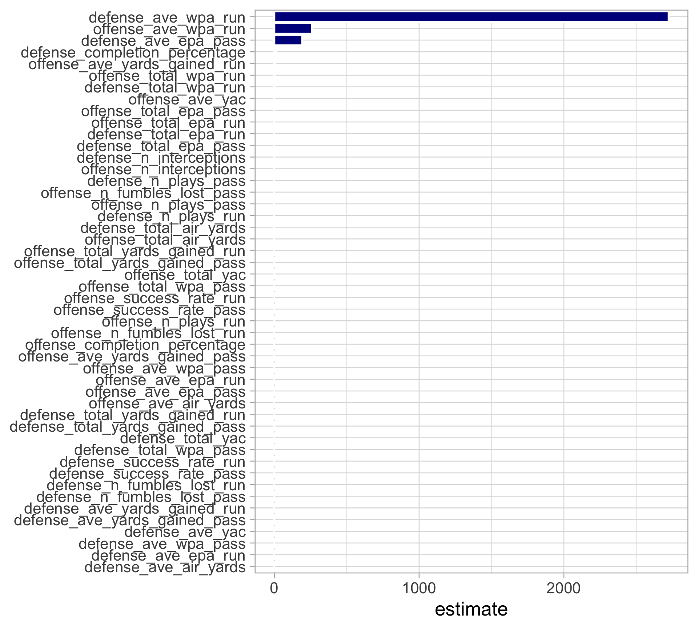
Elastic net example
Need to tune both \(\lambda\) and \(\alpha\) - can do so manually with our own folds
set.seed(100)
fold_id <- sample(rep(1:10, length.out = nrow(model_x)))Then use cross-validation with these folds for different candidate alpha values:
cv_enet_25 <- cv.glmnet(model_x, model_y, foldid = fold_id, alpha = 0.25)
cv_enet_50 <- cv.glmnet(model_x, model_y, foldid = fold_id, alpha = 0.5)
cv_ridge <- cv.glmnet(model_x, model_y, foldid = fold_id, alpha = 0)
cv_lasso <- cv.glmnet(model_x, model_y, foldid = fold_id, alpha = 1)Can see which one had the lowest CV error among its candidate \(\lambda\) values:
which.min(c(min(cv_enet_25$cvm), min(cv_enet_50$cvm), min(cv_ridge$cvm), min(cv_lasso$cvm)))[1] 4Elastic net example
Can view same type of summary
cv_enet_50 |>
tidy() |>
ggplot(aes(x = lambda, y = nzero)) +
geom_line() +
geom_vline(xintercept = cv_enet_50$lambda.min) +
geom_vline(xintercept = cv_enet_50$lambda.1se,
linetype = "dashed",
color = "red") +
scale_x_log10()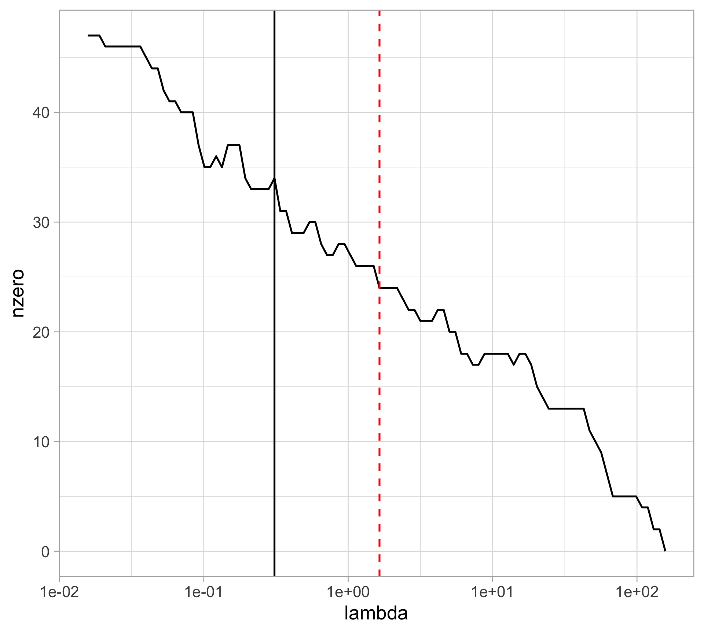
Comparison of models based on holdout performance
set.seed(101)
N_FOLDS <- 5
nfl_model_data <- nfl_model_data |>
mutate(test_fold = sample(rep(1:N_FOLDS, length.out = n())))get_test_pred <- function(x) {
test_data <- nfl_model_data |> filter(test_fold == x) # get test and training data
train_data <- nfl_model_data |> filter(test_fold != x)
test_x <- as.matrix(select(test_data, -score_diff, -test_fold)) # get test and training matrices
train_x <- as.matrix(select(train_data, -score_diff, -test_fold))
lm_fit <- lm(score_diff ~ ., data = select(train_data, -test_fold)) # fit models to training data
ridge_fit <- cv.glmnet(train_x, train_data$score_diff, alpha = 0)
lasso_fit <- cv.glmnet(train_x, train_data$score_diff, alpha = 1)
enet_fit <- cv.glmnet(train_x, train_data$score_diff, alpha = 0.5)
tibble(lm_pred = predict(lm_fit, newdata = test_data), # return test results
ridge_pred = as.numeric(predict(ridge_fit, newx = test_x)),
lasso_pred = as.numeric(predict(lasso_fit, newx = test_x)),
enet_pred = as.numeric(predict(enet_fit, newx = test_x)),
test_actual = test_data$score_diff,
test_fold = x)
}test_pred_all <- map(1:N_FOLDS, get_test_pred) |>
bind_rows()Comparison of models based on holdout performance
Compute RMSE across folds with standard error intervals
test_pred_all |>
pivot_longer(lm_pred:enet_pred,
names_to = "type",
values_to = "test_pred") |>
group_by(type, test_fold) |>
summarize(
rmse = sqrt(mean((test_actual - test_pred)^2))
) |>
ggplot(aes(x = type, y = rmse)) +
geom_point(size = 4) +
stat_summary(fun = mean, geom = "point",
color = "red", size = 4) +
stat_summary(fun.data = mean_se, geom = "errorbar",
color = "red", width = 0.2)Linear regression actually slightly outperforms regularization here, but within intervals
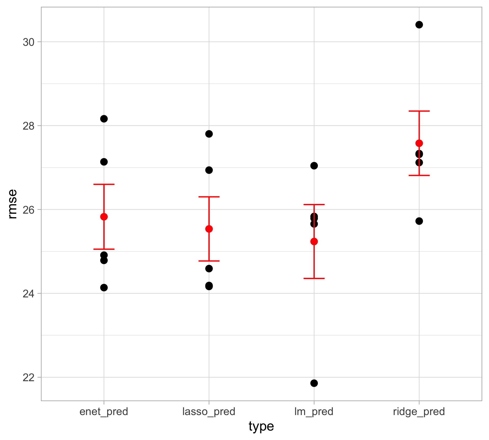
Ridge, lasso, elastic net: what to use?
Ridge regression is particularly valuable when there are collinear predictors.
- Ridge penalty reduces the covariance of \(\hat\beta\) by encouraging effects to be “shared” between collinear predictors, and as a result reduces the variance of predictions as well.
LASSO is very useful when you are interested in identifying nonzero coefficients or when you may have many irrelevant features.
Can handle \(p >n\) case
For example, in statistical genetics, identifying the genes associated with a disease might be just as medically interesting as knowing the actual numerical association.
Use elastic net when you have both highly correlated variables and a large number of potentially irrelevant features!
Appendix: Lasso and ridge in pictures
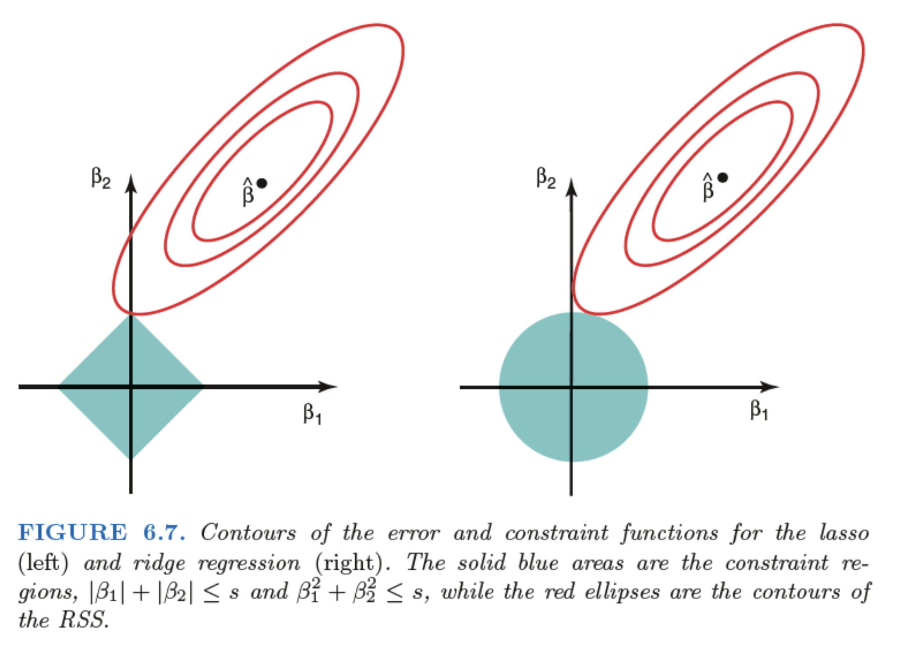
Appendix: Lasso and ridge in pictures, explained
Consider the case of \(p=2\) (2 predictors, hence 2 coefficients \(\beta_1\) and \(\beta_2\) to be estimated)
The residual sum of squares has elliptical contours, centered at the unregularized least squares estimate \(\hat \beta\)
The constraint region for lasso (left) is the diamond \(\vert \beta_1 \vert + \vert \beta_2 \vert \le s\)
The constraint region for ridge (right) is the square \(\beta_1 ^ 2 + \beta_2 ^ 2 \le s\)
Both methods aim to find the first point where the elliptical contours hit the constraint region
Unlike the disk, the diamond has corners; if the solution occurs at a corner, then it has one \(\beta_j\) equal to zero
When \(p>2\), the diamond becomes a rhomboid (with many corners, flat edges, faces, etc.), allowing more opportunities for the estimated coefficients to be zero